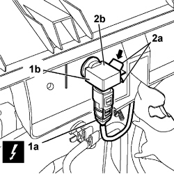

5010D72 AIR QUALITY SENSOR - R.R. FOLLOWING ELECTRICAL CIRCUIT CHECK
- Path
- Procedures > 50 AUXILIARY UNITS > 5010 CLIMATE CONTROL - MISCELLANEOUS > 5010D AIR TEMPERATURE RECORDING SYSTEM > 5010D72 AIR QUALITY SENSOR - R.R. FOLLOWING ELECTRICAL CIRCUIT CHECK
- Kind
- repair procedure (removal / refitting; the operation number is the code)
- Applies to
- all engines; all production periods
- Interactive page
- https://sloeber94.github.io/elrnDB-fCrm/en/#/194000595
Applies to: all engines; all production periods
 Removing
Removing
 Refitting
RefittingOp. 5050B32 WINDSCREEN WIPER ARM/S - R+R
Op. 7210E22 R.R. WINDSCREEN BASE TRIM
1. Disconnect the electrical connection (1a) from the air quality sensor (1b).
2. Working on the retaining tabs (2a) remove the air quality sensor (2b) from the windscreen base trim.

Applies to: all engines; all production periods
Description | Connector | |
|---|---|---|
1a | EXHAUST GAS SENSOR |
Applies to: all engines; all production periods
Refitting
Removing- Check that the air quality sensor is not damaged.
- Fit it in the housing until the tabs are fully attached.
- Connect the connector to the air quality sensor.
Description | Connector | |
|---|---|---|
EXHAUST GAS SENSOR |
Op. 7210E22 R.R. WINDSCREEN BASE TRIM
Op. 5050B32 WINDSCREEN WIPER ARM/S - R+R
- Close the bonnet.
Topics linked from this page (3)
- 5050B32 WINDSCREEN WIPER ARM/S - R+R
- 7210E22 R.R. WINDSCREEN BASE TRIM
- K064 EXHAUST GAS PRESENCE SENSOR